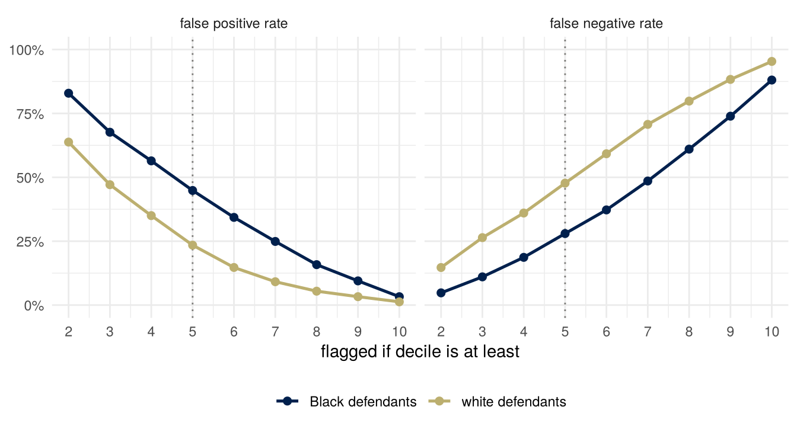
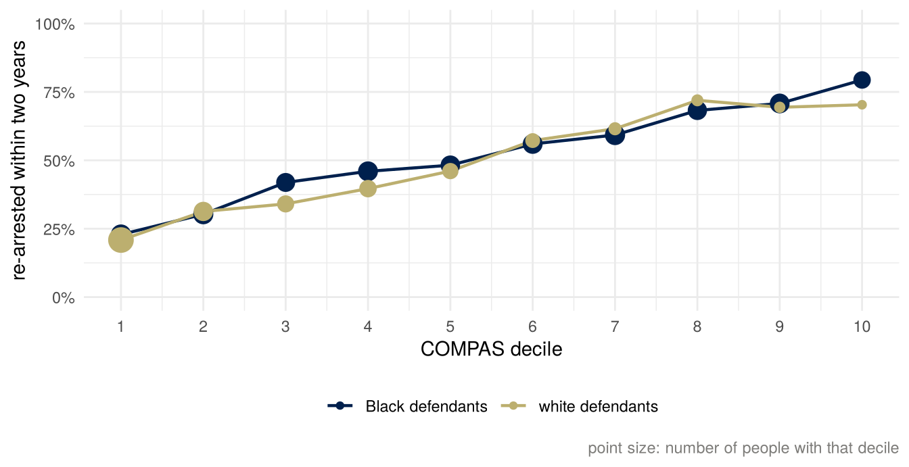
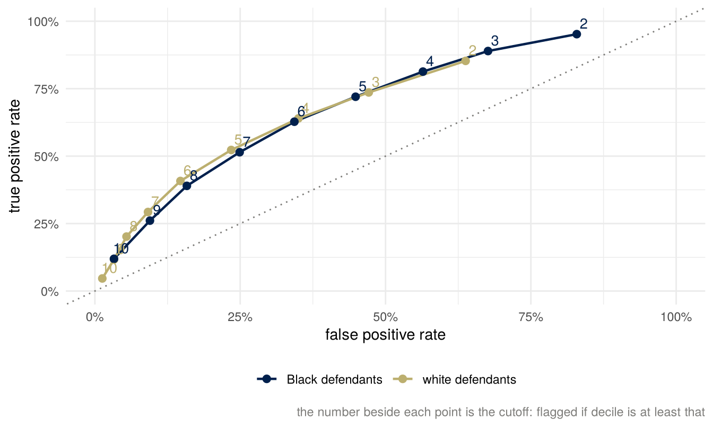

| n | re-arrested within 2 years | flagged | FPR | FNR | PPV | NPV | |
|---|---|---|---|---|---|---|---|
| Black defendants | 3,696 | 51.4% | 58.8% | 44.8% | 28.0% | 63.0% | 65.0% |
| white defendants | 2,454 | 39.4% | 34.8% | 23.5% | 47.7% | 59.1% | 71.2% |
Fairness I: observational
Important note: this week is about whether a risk score used on real defendants was fair, and who it was fair to. The arithmetic below is not contested; it holds for any table of counts. Which fairness criterion should matter, and who should bear the errors a score makes, are contested, and my view is one view. A well-argued position I think is wrong can still get full marks.
Summary
A platform shows a job ad to some of the people an advertiser chose and not to others. A government department refers some requests for a benefit advance to a fraud check. A county’s courts see a risk score that flags some defendants as likely to be arrested again. Each is a score that sorts people into two groups, and in each someone has argued that one group is treated worse. The third has a public table of counts. In 2016 a newsroom reported that the score flagged Black defendants who did not reoffend almost twice as often as it flagged white defendants who did not reoffend. The score’s vendor, and others, replied that the score was equally accurate for both groups: among people it flagged, the same share reoffended, and the same score meant the same rate in both groups. Both are correct descriptions of the same table. This week is about why both can be true at once, and what follows, there and in the other examples.
A classifier has four rates. Two of them condition on what happened (the false positive and false negative rates); two condition on what the classifier said (the positive and negative predictive values). The two sides of the dispute reported the two kinds. The three families of statistical fairness criteria ask for one or another of these to be equal across groups. A four-line identity ties a group’s prevalence, its predictive value and its two error rates together, so that when two groups differ in prevalence, a classifier with the same positive predictive value in both (neither \(0\) nor \(1\)) has a different false positive rate or a different false negative rate in the two. The general version of that result, for scores rather than flags, is stated and not proved. What remains is a choice among criteria, and the reading’s three views of equality of opportunity say which criterion each kind of fairness supports. The choice is a value judgment that the arithmetic narrows and does not make.
The usual remedies have costs of their own. Leaving the attribute out of a model does not keep it out of the predictions, and a cutoff per group gives the same score different meanings; a kidney-function equation that dropped race is a case where a cost was accepted on purpose. And none of the criteria can say how a disparity came about: the same table can come from different worlds.
What you brought
Every rule that sorts people into two groups can be wrong in two ways, and the two mistakes usually fall on different people. A fraud flag that fires wrongly costs the person flagged; a fraud flag that stays silent wrongly costs whoever the fraud is against. A screening test that says “disease” to a healthy person costs that person a course of treatment or a month of worry; a test that says “healthy” to a sick person costs that person the treatment they needed. Keep your own example in mind. Everything below is about what happens when the people on one side of a rule are, on average, more or less likely than the people on the other side to have the thing the rule is looking for.
Scores that sort people
Who sees a job ad
An advertiser on a platform such as Facebook chooses who may see an ad: an age range, a region, some interests. The platform then decides who, among those, actually sees it, using its own estimate of who the ad is relevant to. Ali, Sapiezynski, Bogen, Korolova, Mislove and Rieke (2019) ran ads with the same target audience and measured who was reached. Ads for jobs in the lumber industry reached an audience that was 72 percent white and 90 percent male; ads for cashier positions in supermarkets, an audience 85 percent female; ads for positions with taxi companies, an audience 75 percent Black (page 2 of the arXiv version; their Figure 8, page 12, shows the full breakdown). The advertiser had chosen none of this. The skew came from the content of the ad, in large part through the platform’s estimate of relevance, and they found skew in the delivery of housing ads as well.
In June 2022 the US Department of Justice sued Meta, Facebook’s owner, under the Fair Housing Act, alleging among other things that the algorithms deciding which users receive housing ads rely in part on characteristics the Act protects; the court approved a settlement six days later. Under it Meta built what it calls a Variance Reduction System, to reduce the differences, by sex and by estimated race or ethnicity, between the audience eligible to see a housing ad and the audience that actually sees it. The targets agreed in January 2023 were, by the end of that year, a difference of at most 10 percent for 91.7 percent of housing ads by sex and for 81.0 percent by estimated race or ethnicity.
Nothing in this example is an outcome that anyone would call the truth; there is only who saw the ad. So the four rates below do not apply to it. What the settlement equalizes is the make-up of the audience that was reached, against the audience that could have been: a version of the criterion called independence below.
Fraud checks on universal credit advances
The UK’s Department for Work and Pensions pays advances to new universal credit claimants: 1.4 million of them in 2024 to 2025, worth £0.8 billion in total. A machine-learning model scores each request, and requests it scores as high risk are referred to a caseworker, who reviews the case and approves or declines it. The caseworker receives no risk rating and is not told that the model made the referral, and the referrals are mixed with a random sample of other requests. The department estimates that the model is about three times as effective at finding fraud as a random selection.
In July 2025 the department published a fairness assessment of the model covering April 2024 to March 2025. For each group it reports two numbers, each as a ratio to a comparison group: the share of requests the model referred (its “risking disparity”), and, among referred requests, the share the caseworker declined, which counts as a correct referral (its “outcome disparity”). The statistical annex calls the second share the true discovery rate (annex, paragraph 17). The first is the share flagged and the second is the positive predictive value, in the language of the rest of these notes. Non-UK nationals were referred 2.27 times as often as UK nationals, and their referrals were declined 0.97 times as often, a difference from 1 that was not statistically significant (Tables 3 and 4, page 12). By age, claimants aged 55 to 65 were referred 2.80 times as often as those aged 35 to 44, and their referrals were correct 0.58 times as often (Tables 1 and 2, pages 10 and 11).
The department reads the two numbers together. Where the two ratios are on the same side of 1, it takes the model to be targeting the fraud risk in that group and calls the outcome good; where they move in opposite directions, it treats the result as a signal to look further (paragraphs 16, 17 and 20). It found the results for some age groups and for non-UK nationals inconsistent in that sense, decided to retrain the model, and concluded that it remains “reasonable and proportionate to continue operating the model” (paragraphs 24 to 26). Age was the only protected characteristic it could analyze, because too few of the referred claimants had answered the optional equality questions (annex, paragraphs 3 and 4). What the two published numbers imply about the error rates, which the assessment does not report, is worked out under “Unequal base rates” below.
COMPAS
COMPAS is a risk assessment tool sold by Northpointe. From the answers to 137 questions, none of which is race, it produces scores on several scales; the general recidivism score is a decile from 1 to 10, and the county that used it labeled deciles 1 to 4 “low,” 5 to 7 “medium” and 8 to 10 “high.” Broward County, Florida, used the score in pretrial decisions, so a high decile could mean waiting for trial in jail rather than at home.
In May 2016 ProPublica, a nonprofit newsroom, published “Machine Bias” (Angwin, Larson, Mattu and Kirchner, 2016) with a methods article beside it (Larson, Mattu, Kirchner and Angwin, 2016). They had obtained the scores of more than 7,000 people assessed in 2013 and 2014 in Broward County, and they followed each person’s arrest record for two years. Their finding, in their own sentence: Black defendants who did not reoffend were almost twice as likely to be classified as higher risk as white defendants who did not reoffend. And in the other direction, white defendants who did reoffend were more often classified as low risk than Black defendants who did.
The replies came quickly. Northpointe disputed the analysis, and a group of criminal-justice researchers published a rejoinder; I have not read either, and I take their content from the summary in Chouldechova (2017), section 1, which is an optional reading this week. Both replies made the same kind of point: the score is calibrated (the same decile means the same rate of reoffending in both groups) and it has the same positive predictive value in both groups (among people flagged, the same share reoffend). ProPublica’s own methods article reports those numbers too. The dispute was never about the table. It was about which numbers in the table a fair score has to equalize.
The convention for this week. \(Y = 1\) means a new arrest within two years of the assessment, in the county’s records. \(\hat Y = 1\) means the score flagged the person as higher risk, which in ProPublica’s tables means a decile of 5 or above. Flagged and selected mean the same thing in these notes: \(\hat Y = 1\), the person the score picks out, whether for detention, a fraud check or an ad. \(A\) is race as the data record it, “African-American” or “Caucasian”; I write Black and white. So \(1\) is the bad outcome and \(1\) is the flag. The textbook’s examples (hiring, lending) run the other way, with \(1\) as acceptance, and reading someone else’s coding without tripping over it is part of the skill. Nothing in the course fixes which value of \(Y\) is the good one; every piece of material says which it is using.
Four numbers
The table below is computed from ProPublica’s published data (their compas-scores-two-years.csv), restricted to the two groups, 6,150 people. I kept only counts by group, decile and outcome; nothing about any individual is in this course’s files. The rates reproduce the ones in the methods article to the decimal.
ProPublica’s two numbers are the FPR column (of those who were not re-arrested, 45% of Black defendants had been flagged, against 23% of white defendants) and the FNR column (of those who were re-arrested, 48% of white defendants had not been flagged, against 28% of Black defendants). The replies’ numbers are the PPV column (of those flagged, 63% and 59% were re-arrested) and the calibration picture further down (the same decile, about the same rate in both groups). Both sides read the same 6,150 rows.
The share re-arrested within two years was 51.4% among Black defendants and 39.4% among white defendants. That is the prevalence of \(Y = 1\) in each group, the base rate, and every result below depends on the two base rates being different. It is a fact about arrests in one county in two years, not about anything deeper.
The four rates and the two predictive values
A binary flag and a binary outcome give a two-by-two table of counts:
| \(\hat Y = 1\) (flagged) | \(\hat Y = 0\) (not flagged) | |
|---|---|---|
| \(Y = 1\) (re-arrested) | true positives | false negatives |
| \(Y = 0\) (not re-arrested) | false positives | true negatives |
Read across a row and you condition on the truth:
- the true positive rate, \(\text{TPR} = P(\hat Y = 1 \mid Y = 1)\), and the false negative rate, \(\text{FNR} = P(\hat Y = 0 \mid Y = 1) = 1 - \text{TPR}\);
- the false positive rate, \(\text{FPR} = P(\hat Y = 1 \mid Y = 0)\), and the true negative rate, \(\text{TNR} = 1 - \text{FPR}\).
Read down a column and you condition on the flag:
- the positive predictive value, \(\text{PPV} = P(Y = 1 \mid \hat Y = 1)\);
- the negative predictive value, \(\text{NPV} = P(Y = 0 \mid \hat Y = 0)\).
The textbook has these as Tables 3.1 and 3.2 (page 47), and says the names need not be memorized. Which way each conditions does need to be known, because the dispute turned on it. The error rates ask how the score behaved on each kind of person, which you can only know after the two years have passed. The predictive values ask what happened to each kind of flag, which is what a judge who sees the flag and nothing else experiences. ProPublica had two years of hindsight and sorted people by what happened. A judge at a hearing has the flag. Each side reported the comparison that its position made visible.
You have met two of these rates before under other names. A hypothesis test that rejects a true null hypothesis with probability \(\alpha\) has a false positive rate of \(\alpha\), with “null is true” in the role of \(Y = 0\) and “reject” in the role of \(\hat Y = 1\); its Type II error rate \(\beta\) is a false negative rate.
Differing definitions of fairness
Independence, separation, sufficiency
The textbook organizes the dozens of statistical fairness criteria proposed in the literature into three families (pages 54 to 61). Each equalizes something across the groups defined by \(A\); each can be stated for a score \(R\) as a conditional independence, and for a binary flag \(\hat Y\) as an equality of rates.
| the score \(R\) | the flag \(\hat Y\) | other names | |
|---|---|---|---|
| independence | \(R \perp A\) | the same share selected (flagged) in every group | demographic parity, statistical parity |
| separation | \(R \perp A \mid Y\) | the same FPR and the same FNR in every group | error rate parity, equalized odds |
| sufficiency | \(Y \perp A \mid R\) | the same PPV and the same NPV in every group | predictive parity, which asks for equal PPV only (a relaxation) |
Each is a property of the joint distribution of \((A, R, Y)\). When all three variables are binary that distribution is eight numbers, and you can check any of the criteria from those eight numbers and nothing else. That is what the textbook means by calling them observational, and it is where the week’s title comes from.
The housing-ad settlement asks for something like independence. Meta’s system works to bring the make-up of the audience that sees a housing ad, by sex and by estimated race or ethnicity, close to that of the audience eligible to see it: independence of being shown the ad from those attributes, within the eligible audience. Here a regulator chose the criterion and wrote a tolerance into an agreement.
The commitment I asked for in the lecture, which number you would want equal as a defendant who will not reoffend, as the judge, or as the public, has these three as its answers. The defendant who will not reoffend is in the \(Y = 0\) row and is harmed by a false positive, so wants the false positive rate equal: separation. The judge sees only the flag and wants a flag to mean the same thing whoever it is on: sufficiency. The public may want the shares flagged to be equal, or may want the misses equal; those are independence and the other half of separation.
The criteria on the COMPAS table
Independence fails: 59% of Black defendants were flagged against 35% of white defendants. Separation fails, and not only at the county’s cutoff. The figure moves the cutoff from decile 2 to decile 10 and recomputes both error rates; the gap between the groups does not close anywhere in that range. (Flagging everyone, or no one, equalizes the error rates trivially.)

Sufficiency comes nearer to holding, but for the flag it does not hold: the positive predictive values at the county’s cutoff are 63.0% and 59.1%, four points apart, and the negative predictive values are 65.0% and 71.2%, six points apart. Predictive parity, equal PPV alone, is closer than sufficiency. And the score is roughly calibrated by group: the observed two-year re-arrest rate rises with the decile in the same way for both groups.

The white defendants’ line wobbles at the top because few of them had high deciles (64 had decile 10, against 286 Black defendants). That is sampling variation, and it is the one place in this week where variance rather than bias is the issue: every rate in the tables is an estimate from a finite group, and Chouldechova’s figures show confidence intervals that the lecture’s do not.
Calibration and calibration by group
A score \(R\) with values in \([0, 1]\) is calibrated if \(P(Y = 1 \mid R = r) = r\) for every \(r\): of the people given score \(r\), a fraction \(r\) have the outcome. It is calibrated by group if \(P(Y = 1 \mid R = r, A = a) = r\) for every \(r\) and every group \(a\). COMPAS’s deciles are not probabilities, so the figure above shows the weaker thing that is actually at stake: the same decile, the same rate in both groups. The textbook’s Fact 2 (page 61) says calibration by group implies sufficiency, and its Proposition 1 says the converse nearly holds: a sufficient score can be relabeled, by the map \(r \mapsto P(Y = 1 \mid R = r)\), into one that is calibrated by group. Sufficiency and calibration by group are the same idea up to a renaming of the score’s values.
Calibration by group says less than the replies implied.
Nothing has to be imposed to get it. The optimal score, \(r(x) = E[Y \mid X = x]\), is calibrated within any group that the features \(X\) can identify (Fact 3, page 62). A model fitted well on rich features will be approximately calibrated by group without anyone asking for it, and the textbook shows this on census income data with an off-the-shelf random forest (pages 62 and 63). So demanding calibration by group is not much of a demand; it mostly certifies that the model was fitted properly.
It is also lost when a score is turned into a flag. If \(R\) is calibrated by group and the flag is \(\hat Y = 1\{R \geq t\}\), then the positive predictive value in group \(a\) is \(E[R \mid R \geq t, A = a]\), the average score above the cutoff in that group. Two groups with different score distributions have different averages above the same cutoff, so equal calibration does not give equal PPV after thresholding (textbook, page 71). On the COMPAS table, 47% of the Black defendants selected at the county’s cutoff are in deciles 8 to 10, against 32% of the white defendants selected, so the average re-arrest rate among those selected, the PPV, is higher in the first group. That is why the two PPVs in the table differ by four points although the deciles are roughly calibrated. It also means that “calibrated” and “predictive parity” are two different claims; the replies made both.
The care-management score met earlier in the course shows how little calibration certifies. Obermeyer, Powers, Vogeli and Mullainathan (2019) found its predictions well calibrated across races for its label, next year’s medical cost: at every level of the score, Black and White patients had roughly the same costs the following year (their Figure 3A). At a given score, Black patients were considerably sicker (Figure 1A), because unequal access to care meant that less was spent on Black patients than on White patients with the same needs. Calibration holds for the label a score was trained on. It says nothing about whether that label is the one that matters.
Calibration checks that the score’s values mean what they say. A score that gives everyone the population’s base rate is perfectly calibrated. A score that is perfect in one group and gives the other group its base rate is perfectly calibrated by group (textbook, page 94). Neither is a score anyone would call fair, and the second is informative in one group only. The value judgment hidden in “it is calibrated, so it is fair” is that a score is fair when it means what it says, whatever it does with that meaning.
Conflicting definitions
The predictive value from the rates
Within one population with prevalence \(p = P(Y = 1)\), the share flagged is, by the law of total probability, \[ P(\hat Y = 1) = p\,(1 - \text{FNR}) + (1 - p)\,\text{FPR}, \] the true positives plus the false positives. The positive predictive value is the true positives’ share of that: \[ \text{PPV} = \frac{p\,(1 - \text{FNR})}{p\,(1 - \text{FNR}) + (1 - p)\,\text{FPR}}. \]
You have seen this formula with the significance filter, as the probability that a published finding is true: a share \(p\) of the research hypotheses tested are true (their nulls are false), tests have level \(\alpha\) and power \(1 - \beta\), and the probability that a rejection is a true discovery is \(p(1-\beta) / [p(1-\beta) + (1-p)\alpha]\). Replace \(\alpha\) by FPR, \(\beta\) by FNR and “true hypothesis” by “reoffended” and it is the same computation. In both settings the quantity that nobody designing the procedure controls is \(p\), and in both it is the quantity that decides how often a positive result is right.
The negative predictive value is the same computation on the other column: \[ \text{NPV} = \frac{(1 - p)\,(1 - \text{FPR})}{(1 - p)\,(1 - \text{FPR}) + p\,\text{FNR}}. \]
Chouldechova’s identity
Fix one group, with prevalence \(p\). Its flag has some FPR, FNR and PPV. The formula for PPV above can be read the other way round. The odds against a flag being right are \[ \frac{1 - \text{PPV}}{\text{PPV}} = \frac{(1 - p)\,\text{FPR}}{p\,(1 - \text{FNR})}, \] the false positives over the true positives. Solve for FPR: \[ \text{FPR} \;=\; \frac{p}{1 - p}\cdot\frac{1 - \text{PPV}}{\text{PPV}}\cdot(1 - \text{FNR}). \]
This is equation (2.6) of Chouldechova (2017), who introduces it with “it is not difficult to show.” It is four lines from the definition of conditional probability and the law of total probability, and it holds for any two-by-two table of counts whatever: it is an accounting identity, not a model. Four quantities, one equation; fix any three and the fourth is determined. The one that nobody designing a score controls is \(p\).
Solved for the false negative rate instead: \[ \text{FNR} \;=\; 1 - \text{FPR}\cdot\frac{1 - p}{p}\cdot\frac{\text{PPV}}{1 - \text{PPV}}. \]
Unequal base rates
Take two groups \(a\) and \(b\) with prevalences \(p_a \neq p_b\), and a flag with the same PPV in both (predictive parity), strictly between \(0\) and \(1\), and the same FNR in both. Write the identity in each group and divide: \[ \frac{\text{FPR}_a}{\text{FPR}_b} \;=\; \frac{p_a / (1 - p_a)}{p_b / (1 - p_b)}, \] the ratio of the groups’ odds of the outcome. If the prevalences differ, this ratio is not \(1\), so the false positive rates differ. (The condition on the PPV is what makes the division legitimate: a flag whose every positive is right has no false positives, one whose every positive is wrong has no true positives, and the identity has a \(0\) in it either way.) The same argument with FNR and FPR swapped in the roles of “held equal” and “forced apart” gives the mirror statement.
With COMPAS’s two prevalences, 51.4% and 39.4%, the odds are 1.059 and 0.649, and their ratio is 1.63. So a score with equal PPV and equal FNR in both groups would have a false positive rate 1.6 times higher among Black defendants, at these base rates, whatever else was true of it. The observed ratio at the county’s cutoff is 1.91; the difference from 1.63 is accounted for by the PPVs and FNRs not being exactly equal, and you can check it by putting all four of each group’s numbers into the identity. (They balance, as they must: the identity holds for every table.)
This is the binary-classifier version of the week’s main result, and the one you are expected to be able to derive:
When two groups differ in prevalence, a classifier with the same positive predictive value in both groups, strictly between \(0\) and \(1\), has a different false positive rate or a different false negative rate in the two groups.
Given the two groups’ arrest rates and a score with predictive parity, some gap in the error rates had to be there; tuning the score better at that cutoff could not have removed it. Whether the gap was acceptable is a separate question, taken up under “Limits of the identity” below.
The fraud checks report a share flagged and a predictive value, and no error rate, but their two reported ratios are enough to show that the error rates differ. Write \(f\) for the share flagged. Correct referrals are a share \(f\,\text{PPV} = p\,\text{TPR}\) of all requests, and incorrect ones a share \(f\,(1 - \text{PPV}) = (1 - p)\,\text{FPR}\). Non-UK against UK nationals, the first ratio is \(2.27 \times 0.97 = 2.20\), and the second is \[ 2.27 \times \frac{1 - \text{PPV}_{\text{non-UK}}}{1 - \text{PPV}_{\text{UK}}}, \] which is above \(2.27\) because the non-UK predictive value is the lower of the two. If both groups had the same TPR and the same FPR, the first ratio would be \(p_{\text{non-UK}}/p_{\text{UK}}\) and the second \((1 - p_{\text{non-UK}})/(1 - p_{\text{UK}})\), and these cannot both exceed \(1\). So the TPRs differ, or the FPRs do, or both. The argument uses the reported ratios for one year, a description of what happened rather than an inference about the rates behind it. The \(0.97\) is not significantly different from \(1\), and the argument goes through with it set to \(1\). It needs both ratios above \(1\), which holds for predictive-value ratios in a range around \(1\) but not for every ratio.
More can be said about the false positive rate. Dividing the share of incorrect referrals by the share of requests that would not be declined, \[ \text{FPR} \;=\; \frac{f\,(1 - \text{PPV})}{1 - p}, \] so the ratio of non-UK to UK nationals’ false positive rates is \[ 2.27 \times \frac{1 - \text{PPV}_{\text{non-UK}}}{1 - \text{PPV}_{\text{UK}}} \times \frac{1 - p_{\text{UK}}}{1 - p_{\text{non-UK}}}. \] The middle factor is above \(1\). The last factor is at least \(1 - p_{\text{UK}}\), so the ratio is above \(1\) whenever fewer than \(1 - 1/2.27\), about 56 percent, of UK nationals’ requests would be declined on review: requests from non-UK nationals that a caseworker would approve are referred more often. If the share that would be declined is small in both groups, the ratio is at least about 2.27; the department estimates fraud and error on advances at between £0 and £60 million of the £0.8 billion paid (paragraph 3), though that is by value and is not the same thing as a caseworker’s decline. The assessment gives neither group’s \(p\), so this is as far as its numbers go.
Proposition 5
The textbook states the same thing as a proposition about two of the three criteria (page 67): if \(Y\) is not independent of \(A\) and the flag has a nonzero false positive rate, separation and sufficiency cannot both hold for the flag. One more condition is needed, \(\text{FPR} < 1\): the flag \(\hat Y = 1 - Y\) has FPR \(= 1\), FNR \(= 1\) and PPV \(=\) NPV \(= 0\) in every group, so it satisfies both criteria whatever the base rates, and the book’s proof passes over it. With that condition the identity gives a short proof. Suppose both criteria hold, so FPR, FNR, PPV and NPV are all the same in both groups, with \(0 < \text{FPR} < 1\). If also \(\text{TPR} > 0\), rearrange the identity once more: \[ \frac{p}{1 - p} \;=\; \frac{\text{FPR}}{1 - \text{FNR}}\cdot\frac{\text{PPV}}{1 - \text{PPV}}, \] and the right side is the same in both groups, so \(p_a = p_b\), which contradicts \(Y\) depending on \(A\). If \(\text{TPR} = 0\), every flag is a false positive, both PPVs are \(0\), and the negative predictive values \((1 - \text{FPR})(1 - p_a) / [(1 - \text{FPR})(1 - p_a) + p_a]\) differ between the groups because \(\text{FPR} < 1\), so sufficiency fails anyway. That second branch is the textbook’s own route.
The textbook’s Propositions 2 and 3 (pages 65 and 66) do the same for the other two pairs. Independence and sufficiency cannot both hold when \(A\) and \(Y\) are dependent: if \(A \perp R\) and \(A \perp Y \mid R\) then \(A \perp (R, Y)\), hence \(A \perp Y\). Independence and separation cannot both hold when \(Y\) is binary, \(A\) and \(Y\) are dependent and \(R\) and \(Y\) are dependent; the proof writes \(P(R = r \mid A = a)\) two ways by the law of total probability and finds that the two can agree only if \(R \perp Y\) or \(A \perp Y\). Both are one-paragraph arguments and both are in the required reading. Any two of the three criteria, then, can hold together only in degenerate cases, and the one pair where the degenerate case is interesting (separation and sufficiency, with perfect prediction as the escape) is the pair the COMPAS dispute was about.
The general result
Kleinberg, Mullainathan and Raghavan (2017) prove the version for scores, not flags, and it is the one usually cited. I state it and do not prove it; the binary case above is the version for flags. Their setting: each person has a feature vector \(\sigma\), a fraction \(p_\sigma\) of the people with that feature vector are positives, and a risk assignment puts people into bins, each bin labeled with a score \(v\) meant as a probability. Two groups. Three conditions:
- (A) calibration within groups. In each group, of the people assigned to a bin with score \(v\), a fraction \(v\) are positives.
- (B) balance for the negative class. The average score given to the negatives is the same in both groups.
- (C) balance for the positive class. The average score given to the positives is the same in both groups.
Theorem 1.1. If a risk assignment satisfies (A), (B) and (C), then either prediction is perfect (every \(p_\sigma\) is \(0\) or \(1\)) or the two groups have equal base rates.
Theorem 1.2. There is a continuous function \(f\) with \(f(\varepsilon) \to 0\) as \(\varepsilon \to 0\) such that a risk assignment satisfying (A), (B) and (C) to within \(\varepsilon\) forces either perfect prediction or equal base rates to within \(f(\varepsilon)\).
Theorem 1.2 is what answers the objection that exact equality never holds in data: approximately fair on all three still forces approximately one of the two escapes. The mapping to the textbook’s criteria: (A) is calibration by group. (B) and (C) are implied by separation and are strictly weaker than it, because separation asks the whole distribution of the score given \(Y\) to be the same in both groups and balance asks only for its mean. So the theorem is about a weaker pair than Proposition 5 and still finds the same two escapes. The authors note that in the COMPAS dispute the critics pointed at violations of (B) and (C) and the defenders at (A) holding.
Remedies and their costs
Leaving the attribute out
The first remedy most people reach for is to leave the protected attribute out of the model. COMPAS already did: none of its 137 questions is about race. The reading’s pages 52 to 54 explain why that is not enough. In a typical data set many features are each slightly correlated with group membership, and together they predict it well; the book’s example is browsing history and gender, with a figure of a group classifier’s accuracy rising as more such features are added. In large feature spaces the attribute is generally redundant given the other features, and a classifier that would have used it finds a redundant encoding in the others, implementing essentially the same function. The job ads are an instance at a platform’s scale: the advertisers chose the same audience for every ad, and the audiences that saw them still divided by race and sex.
The book adds a caution in the other direction (page 54). In a small, hand-curated feature space the attribute may have no good redundant encoding, and removing it is still not automatically right: medication sometimes depends on race in legitimate ways, if race correlates with the causal factors that matter, and forcing a treatment decision to be uncorrelated with race can harm the individual. Kidney-function estimates are a case where medicine decided the other way.
A kidney equation without race
Kidney function is described by the glomerular filtration rate (GFR), which is generally estimated from the level of creatinine in the blood, with the patient’s age and sex; the estimate is written eGFR. The creatinine equation in use in the United States when Inker and colleagues (2021) wrote also included race: it multiplied the estimate by 1.159 for Black patients (their Table 2). The reason given for it was that, in the studies used to fit it, Black participants had a higher average creatinine level at the same measured GFR. Inker and colleagues write that race in such equations is a social and not a biologic construct, and that its inclusion ignores diversity within and among racial groups.
The coefficient raised Black patients’ estimated kidney function, so their disease looked less advanced. The US Organ Procurement and Transplantation Network (OPTN) wrote in June 2022 that the practice “has led to a systemic underestimation of kidney disease severity for many Black patients,” and that in transplantation it may have affected when patients were listed. It required race-neutral calculations from 27 July 2022, and from 5 January 2023 required kidney programs to correct the waiting times of Black candidates disadvantaged by the old calculation. By 5 July 2023 more than 6,100 Black candidates had had their waiting times modified, by a median of 1.7 years.
What removing race costs can be read from Inker and colleagues’ validation data (12 studies, 4,050 participants, 14.3 percent of them Black). The equation with race overestimated measured GFR by a median of 3.7 (ml per minute per 1.73 m² of body surface) for Black participants and 0.5 for others. A new creatinine equation fitted without race underestimated it by a median of 3.6 for Black participants and overestimated it by 3.9 for others. So the gap between the two groups’ median errors grew, from about 3 to about 7.5, and the errors for Black patients changed direction, from estimates too high to estimates too low. These are median errors over each whole group. They are not a check of calibration by group, which asks about measured GFR among people with the same estimate; that would need the paper’s data rather than its summary. The race-free equation’s error for Black participants, an estimate too low, is the pattern the coefficient was introduced to correct; in this validation data the coefficient over-corrected, to an estimate too high. Neither creatinine equation is right on average for Black participants. The case for dropping race rests on what race stands for and on which error is worse, not on accuracy. Equations that add a second marker, cystatin C, and omit race were more accurate than the new creatinine equations, with smaller differences between the groups.
The choice made was to accept larger differences between the groups’ errors, with Black patients’ errors now in the direction that makes disease look more advanced, rather than keep an equation that used race. What that gives up, and who it owes the explanation to, are the questions of “Which criterion to give up” below.
Thresholds
A county can move the cutoff without touching the score. Move it up and fewer people are flagged: the false positive rate falls and the false negative rate rises, in both groups. The figure plots each group’s (FPR, TPR) pair at every cutoff.
Warning: Removed 1 row containing missing values or values outside the scale range
(`geom_text()`).
The same cutoff puts the two groups at different points: at the county’s cutoff of 5, Black defendants are at (45%, 72%) and white defendants at (23%, 52%). No single cutoff from 2 to 10 gives the two groups the same error rates. The two curves run close to each other, which is the textbook’s “visualizing separation” picture (pages 58 to 60): the trade-offs achievable in both groups are the points under both curves, and coming close to the same point in both groups means a different cutoff for each group: decile 6 for Black defendants and decile 4 for white defendants puts the two groups’ false positive rates within a point of each other and their false negative rates within two. That is post-processing (textbook, pages 63 and 64): take the score as given and set group-specific cutoffs so that one criterion holds, or nearly. Then the same decile means different treatment depending on the group, and the score is no longer sufficient for the flag.
The reading’s case study on credit scoring (pages 67 to 71) does the same with a credit score and four groups, and shows how far apart the resulting cutoffs and trade-offs are under each criterion. Cutoffs that differ by group are not only a proposal in papers. LSE’s contextual offers are one or two grades below the standard offer for applicants who are eligible, with eligibility set by contextual information about an applicant’s background, not by race: a lower cutoff on the same score, grades, for a group defined by context.
The identity holds at every cutoff, in every group. Moving the cutoff changes all three of FPR, FNR and PPV; it does not change the constraint between them, and it does not change \(p\). What a false positive costs relative to a false negative, and the cutoff that follows from those costs, is a different question, taken up later in the course.
What is being predicted?
What is \(Y\)? It is an arrest for a new offense, recorded in Broward County, within two years. What anyone cares about is whether the person reoffended, which nobody observes. Arrest is a proxy for it, and the gap between the two is not the same for everyone: who gets arrested depends on who gets stopped, searched and charged, and policing is not spread evenly across neighborhoods or groups. There is a second gap, of the kind that arises when the decision changes what can be observed: a defendant held in jail before trial cannot be arrested on the street, so the outcome is observed under conditions the score itself helped set.
Every rate in this week, the two groups’ prevalences included, is a rate of the proxy. Errors in the label move people between the rows of the table, so they change the measured rates, and the direction depends on how the errors line up with the score. A reoffender who is not caught is counted as “did not reoffend,” and if the score flagged them they are counted as a false positive, so the measured false positive rate is too high. A non-reoffender who is wrongly arrested leaves the “did not reoffend” row, and if wrongful arrests fall mostly on flagged people the measured false positive rate is too low. If the errors differ between groups, so does the bias in each group’s measured prevalence and rates. I do not know the size of either gap in these data and neither does anyone else; the point of asking is that the base-rate difference the whole argument turns on is partly a product of the system being evaluated.
The fraud checks have the same structure. A referral counts as correct when the caseworker declines the advance, which is a decision made on the evidence the caseworker has, not an established fraud. And the outcome exists only for requests that someone reviewed: those the model referred, and the random sample of the others that the department uses to monitor what the model misses (annex, paragraph 31). For the rest no outcome is recorded.
Three views of equality of opportunity
Why would anyone want one of these criteria rather than another? The textbook’s fourth chapter (pages 81 to 85) sets out three views of what equality of opportunity means.
- The narrow view: treat similar people similarly, taking their current degree of similarity as given. Two applicants with the same qualifications should have the same chance. This is close to “individual fairness,” and the book observes that it has little normative content beyond consistency, because it does not say what counts as similar.
- The broad view: organize society so that people of similar ability and ambition can achieve similar outcomes. This is not about any one decision; it is about schools, funding and institutions before the decision is reached, and it is the view associated with Rawls’s fair equality of opportunity.
- The middle view: treat seemingly dissimilar people similarly when the causes of their dissimilarity are things we should discount, such as past injustice or misfortune. Decision makers have an obligation not to perpetuate disadvantage, and the intervention is at the decision, not in the institutions before it.
The book then connects these to the criteria (pages 92 to 97), with two caveats that it states first and I repeat: every observational criterion ignores who applied in the first place (a bank that discourages one group from applying can satisfy all three), and statistical criteria alone never certify that a system is fair. With those in place:
- Calibration by group fits the narrow view. If the features are the relevant ones and group membership is not, calibration says the score does not consider the group beyond what the relevant features encode, and group differences in outcomes are justified by differences in features.
- Demographic parity relates, tenuously, to the broad view: equal shares at the decision as a proxy for equal outcomes in life. The book is careful to say the relation is loose.
- Error rate parity is, in the book’s words, the hardest criterion to connect rigorously to any moral notion, and it is nevertheless the one ProPublica’s finding tapped into. The book ties it to the middle view: if one group’s higher error rate comes from historical and present conditions that account for differences in qualifications, then letting that group bear more of the mistakes perpetuates the disadvantage. It ties it to the narrow view as well, since one remedy for an error-rate gap is to collect more data and assess people more accurately as they are, and it concludes that error rate parity answers to no single principle but says something about both views (page 101).
The dispute over the first table is a dispute between two of these views. The error rates are mostly a middle-view complaint; the predictive values are a narrow-view defense. Neither is a mistake. They disagree about what a fair score owes, and who it owes it to.
The book also says (page 97) that the two errors do not weigh the same. A false positive, in bail or sentencing, is an unjust denial of liberty to a person who would not have reoffended. A false negative is a release that turned out badly, and its cost falls on the public, and depends on the total number of such errors rather than on how they are split between groups. In most domains, the book says, the first kind is the more significant as a normative matter, which is why its argument for caring about error rates at all starts from the false positives.
Which criterion to give up
Equal predictive value or equal error rates: the two cannot both hold. Which would you require, and which would you give up? Who do you owe the explanation to, and who pays for your choice: which group, and which kind of error?
There is no house answer. A defensible position gives up predictive parity, equalizes the false positive rate, and owes the explanation to judges, whose flag now means something different depending on who it is on. Another defensible position keeps predictive parity, accepts unequal error rates, and owes the explanation to the Black defendants who will not be re-arrested and will be flagged at nearly twice the rate, and detained where the flag decides. A third refuses to use a score for this decision at all, which the textbook also lists as a response, and owes the explanation to whoever bears the errors of the human judgment that replaces it. What is not defensible is to treat the question as settled by the arithmetic. The arithmetic settles that a choice has to be made.
The fraud checks made a choice as well. The department’s test asks whether the share referred and the share correctly referred move in the same direction; by that test it will retrain the model, and in the meantime it judged the model reasonable and proportionate to use, with predictive values about equal by nationality and, on the ratios it reported (see “Unequal base rates”), error rates that differ.
Limits of the identity
The identity says that at these base rates an error-rate gap is what predictive parity costs. It does not say the gap is acceptable: a county that finds it unacceptable can give up predictive parity instead. It does not say which criterion is right. It takes the base rates as given, and they are rates of arrest, so the lens-A question about who gets arrested is also a question about \(p\). And it leaves two quantities free: the cutoff, and so the costs that should set it, and the base rate itself, which no score can change and a policy can. The pessimistic reading, that every score can be criticized on some fairness ground so none can be criticized on any, does not follow. Kleinberg, Mullainathan and Raghavan end their paper (section 5) by suggesting, for settings where one kind of error costs more than the other, a search for scores that are calibrated and satisfy the one balance condition for the class whose errors cost more. That is a choice between the criteria, made in the open.
Bias and variation
The identity is a statement about population rates, so it is about neither bias nor variance; it is exact. Variance enters when the rates are estimated from a group of finite size. White defendants with high deciles are few, so the white defendants’ calibration curve wobbles at the top, and a PPV computed in a small group has a wide interval. Chouldechova’s Figure 1 shows 95 percent intervals on every bar. When you compare two groups’ rates, what tells you whether a gap is more than sampling variation is an interval for the difference between the two rates, not whether two separate intervals overlap.
Where disparities come from
All the criteria in these notes are, in the reading’s word, observational: properties of the joint distribution of the features, the group, the score and the outcome, which can be checked from the table of counts and nothing else (pages 71 and 72). With \(A\), \(\hat Y\) and \(Y\) binary, that is eight numbers. The reading names what this costs: “What observational definitions hide are the mechanisms that created an observed disparity” (page 72). Its example is a difference in acceptance rates, which could come from a decision maker who considers group membership out of spite, or from an inequality in society that gives one group an advantage in being accepted. In the first case discrimination is the decision maker’s act; in the second its source may lie outside what the decision maker controls. Both can produce the same table.
The examples in these notes have the same gap. A higher re-arrest rate in one group could come from more offending, or from more policing of the same offending, and ProPublica’s table would look the same. A higher referral rate for one nationality, with the same share of referrals declined, could come from differences in the requests, or from differences in how the requests and the declines came to be recorded. Telling such worlds apart needs a model of how the data came about, which is the subject of the next part of the course.
Lenses
What are we optimizing or predicting? Re-arrest within two years, standing in for reoffending. Every rate in the week, the two base rates included, is a rate of the proxy, and the difference in base rates that the whole argument runs on is partly a fact about policing. In the fraud checks, a caseworker’s decision to decline stands in for fraud, and it is recorded only for requests that someone reviewed. Proxies or true outcomes?
Which comparison gets reported? ProPublica conditioned on the truth, two years later, and reported error rates. The replies conditioned on the flag, as a judge does, and reported predictive values and calibration. Each side reported the comparison that its position made visible, and each number was correct. The fraud checks report the share referred and the predictive value by group, and no error rate; the ratios it reports imply that the error rates differ.
Who bears the error? A false positive is a person flagged who was not re-arrested, and detained where the flag decides the detention. A false negative is a release that went badly, paid for by someone else. Separation failing says the two groups pay different prices for the same score, and the identity says that at unequal base rates a score with predictive parity has to make them.
You have to choose, so choose, and defend it. Equal predictive value or equal error rates, not both. A vendor that ships a calibrated score has made the choice; so has a county that adopts it; so has a newsroom that reports error rates. A default makes the choice too, with nobody to defend it.
And why? COMPAS is a commercial product. “Equally accurate in both groups” was the statement its vendor wanted in the headline, and in the sense it meant, equal predictive value, it is about right. Who benefited from that being the number reported, and would a more competent analyst have chosen a different one?
Readings
Required
- Barocas, Hardt and Narayanan, Fairness and Machine Learning: Limitations and Opportunities (MIT Press, 2023), chapter 3, Classification: “Formalizing classification” through “Varying thresholds and ROC curves” (pages 46 to 50 of the fairmlbook.org PDF; the four rates and risk scores), “Statistical non-discrimination criteria” through the end of “Relationships between criteria” (pages 54 to 67; the three criteria, calibration, Propositions 1 to 5), and “Inherent limitations of observational criteria” (pages 71 to 73). The printed edition may be paginated differently.
- The same book, chapter 4, Relative notions of fairness: “Equality of opportunity” with its three subsections, the narrow, broad and middle views (pages 81 to 85).
- A skim of chapter 3, “Groups in the population” and “No fairness through unawareness” (pages 52 to 54): leaving the group column out of a model does not stop the model from using it through other columns.
If time is short, the pages to keep are 54 to 67 and 81 to 85. Pages 46 to 50 are the vocabulary of true and false positive rates, risk scores and ROC curves, and pages 71 to 73 can wait until after the lecture.
Optional
- Larson, Mattu, Kirchner and Angwin, How We Analyzed the COMPAS Recidivism Algorithm (ProPublica, 23 May 2016). The methods behind the numbers above; the data are at github.com/propublica/compas-analysis.
- Kleinberg, Mullainathan and Raghavan, Inherent Trade-Offs in the Fair Determination of Risk Scores (8th Innovations in Theoretical Computer Science Conference, ITCS 2017, LIPIcs 67, 43:1–43:23, https://doi.org/10.4230/LIPIcs.ITCS.2017.43): section 1 through the statement of Theorem 1.1, and section 5. Theorem numbers here follow the arXiv version (1609.05807v2), which is the version linked.
- Chouldechova, Fair Prediction with Disparate Impact: A Study of Bias in Recidivism Prediction Instruments (Big Data 5(2), 2017, 153–163, https://doi.org/10.1089/big.2016.0047): sections 1, 2.1 and 2.3. Equation (2.6) is the identity above; section 3, not assigned, is about what unequal error rates do under a sentencing policy.
- Chapter 3’s case study on credit scoring (pages 67 to 71), and its chapter notes (pages 73 to 75), which record that criteria like these were already known in educational testing in the 1960s and 1970s (Cleary, Thorndike, Darlington).
- Chapter 4, “Connecting statistical and moral notions of fairness” through “The normative underpinnings of error rate parity” (pages 92 to 101): the book’s own mapping of the three views to the three criteria, which the section above summarizes.
Cited in the text and not assigned
Angwin, Larson, Mattu and Kirchner, “Machine Bias: There’s Software Used Across the Country to Predict Future Criminals. And It’s Biased Against Blacks.” (ProPublica, 23 May 2016, https://www.propublica.org/article/machine-bias-risk-assessments-in-criminal-sentencing). The counts in this week’s figures are from ProPublica’s compas-scores-two-years.csv as published with the methods article, all 7,214 rows, restricted to the 6,150 people whose race is recorded as African-American or Caucasian; I kept counts by group, decile and two-year outcome and nothing else. The replies to ProPublica (Northpointe’s, and a rejoinder by criminal-justice researchers) are cited here only as Chouldechova (2017), section 1, summarizes them; I have not read them.
The examples other than COMPAS, in the order they appear:
- Ali, Sapiezynski, Bogen, Korolova, Mislove and Rieke, “Discrimination through Optimization: How Facebook’s Ad Delivery Can Lead to Biased Outcomes,” Proceedings of the ACM on Human-Computer Interaction 3(CSCW), 2019, 1–30, https://doi.org/10.1145/3359301; arXiv version 1904.02095v5 (“… Can Lead to Skewed Outcomes”), page 2.
- US Department of Justice, Civil Rights Division, United States v. Meta Platforms, Inc., f/k/a Facebook, Inc. (S.D.N.Y.), case page, https://www.justice.gov/crt/case/united-states-v-meta-platforms-inc-fka-facebook-inc-sdny; US Attorney’s Office for the Southern District of New York, “United States Attorney Implements Groundbreaking Settlement With Meta Platforms, Inc., Formerly Known As Facebook, To Address Discrimination In The Delivery Of Housing Ads,” press release, 9 January 2023, https://www.justice.gov/usao-sdny/pr/united-states-attorney-implements-groundbreaking-settlement-meta-platforms-inc-formerly.
- Department for Work and Pensions, “UC Advances Model: Fairness Assessment,” with its Statistical Annex, “Ad hoc statistical release of the fairness analysis for the Advances model” (1 April 2024 to 31 March 2025), published 17 July 2025, https://www.gov.uk/government/publications/fairness-assessment-including-statistical-analysis-of-the-universal-credit-advances-machine-learning-model-1-april-2024-to-31-march-2025 (14-page PDF; paragraph and table numbers as cited above).
- Obermeyer, Powers, Vogeli and Mullainathan, “Dissecting racial bias in an algorithm used to manage the health of populations,” Science 366(6464), 2019, 447–453, https://doi.org/10.1126/science.aax2342; free full text at https://escholarship.org/uc/item/6h92v832.
- Inker, Eneanya, Coresh and colleagues (Chronic Kidney Disease Epidemiology Collaboration), “New Creatinine- and Cystatin C–Based Equations to Estimate GFR without Race,” New England Journal of Medicine 385(19), 2021, 1737–1749, https://doi.org/10.1056/NEJMoa2102953; author manuscript at https://escholarship.org/uc/item/3gj2d8m2.
- Organ Procurement and Transplantation Network, via the Health Resources and Services Administration: “OPTN Board Approves Elimination of Race-Based Calculation for Transplant Candidate Listing,” 28 June 2022, https://www.hrsa.gov/es/node/30355, and “Early Monitoring Report Shows Black Kidney Candidates Are Receiving Waiting Time Modifications After Implementation of New Policies,” 4 December 2023, https://www.hrsa.gov/optn/news-events/news/early-monitoring-report-shows-black-kidney-candidates-are-receiving-waiting-time-modifications-after-implementation-of-new-policies/.
- London School of Economics, “Contextual admissions and offers,” https://www.lse.ac.uk/study-at-lse/undergraduate/prospective-students/how-to-apply/contextual-admissions-and-offers.